|
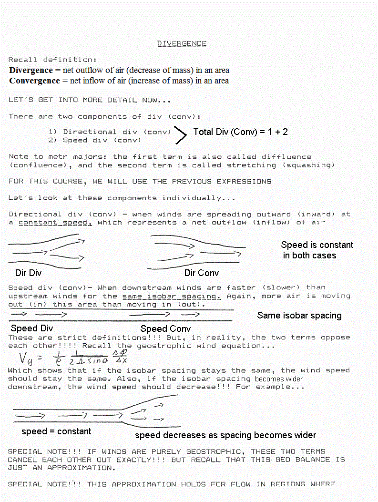 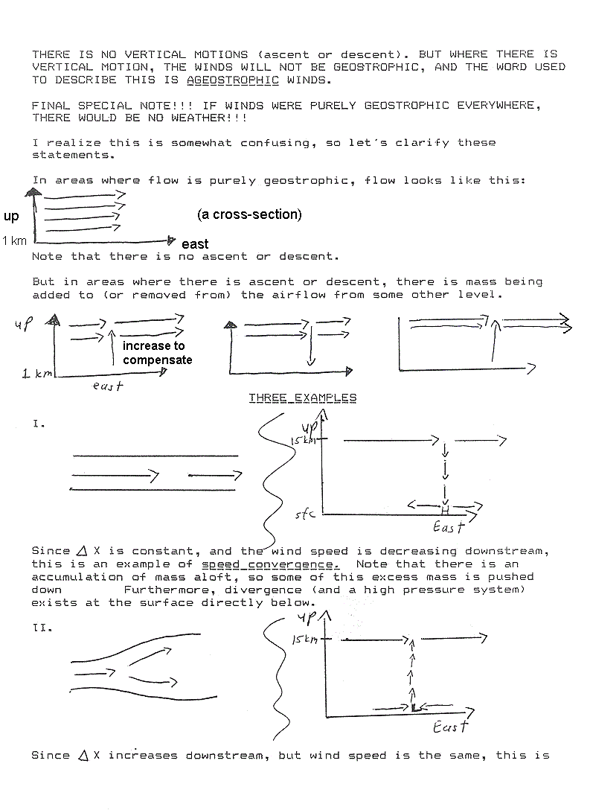 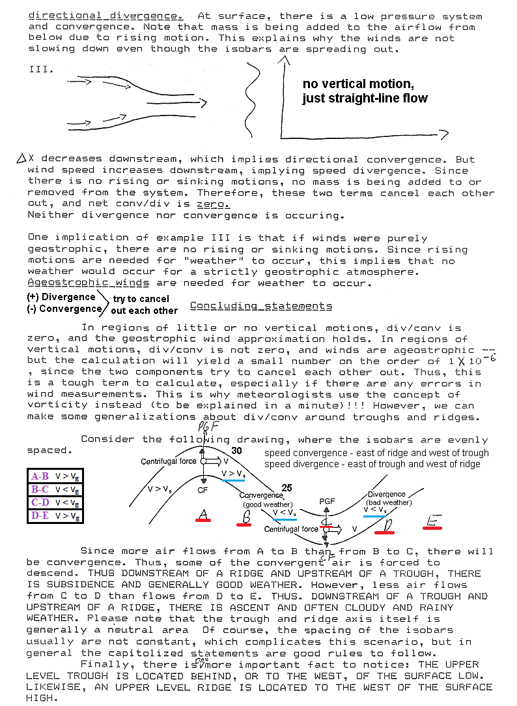 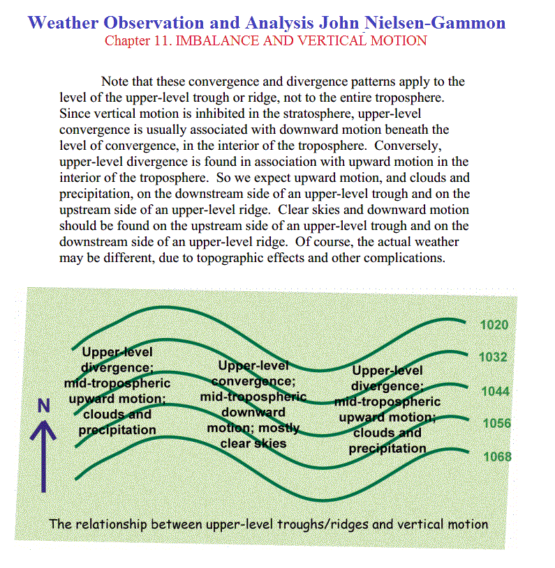 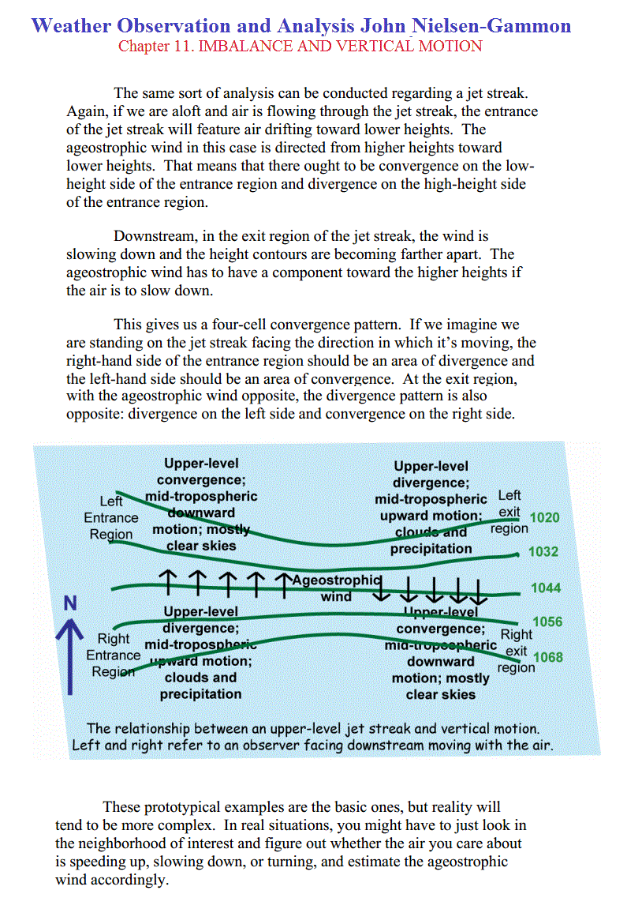 |
The Effects Of Divergence & Convergence On Weather SystemsAll atmospheric synoptic scale systems either thrive or die with the abundance or lack of divergence aloft. You can judge the intensity of of a system by how far it extends into the upper levels and if it has a vertical stack or a tilted stack. An illustration of upper level divergence would be if you turned your ceiling fan on and had the rotation set for a clockwise rotation or blowing up toward the ceiling. When the air being pulled from the floor below the fan reaches the ceiling, it has no place to go but out. This is a picture of divergence aloft. When an updraft occur in a weather system, it is either caused by low level convergence, a heated surface causing an updraft or the jet stream could act as an air flow being blown over a tube creating a vacuum.
|
A. Background While it is easy to visualize how divergence occurs with respect to pressure patterns when there is NO Coriolis effect (air moves at right angles to pressure or height contours towards low values), how does divergence "appear" on charts on which the wind is flowing parallel (or nearly parallel) to contours. While it is difficult to visualize this, or actually see it on charts, divergence can be conceptualized better if one transforms it into the natural coordinate system. (As before, divergence in natural coordinates takes the form of ∆V/∆s, and has conventional units). B. Diffluence and Speed Divergence The concept equation for divergence in natural coordinates is as follows: Horizontal Divergence = Diffluence + Speed Divergence (Note: if diffluence is negative, it is called confluence, and if speed divergence is negative it is called speed convergence). The plus sign merely means you have to consider both effects, although the algebraic sign of one or both of the terms can be negative. Let's consider this using the 500 mb level, since that is near the Level of Non-divergence. The concept equation above should produce a value near zero, therefore, when applied to the 500 mb level. You have enough experience with charts drawn for the middle and upper troposphere (700 mb to 200 mb) to realize that the height and wind patterns resemble sine waves, with ridges and troughs. Let's examine the trough that was associated with the storminess in Southern California on February 22, 2005. 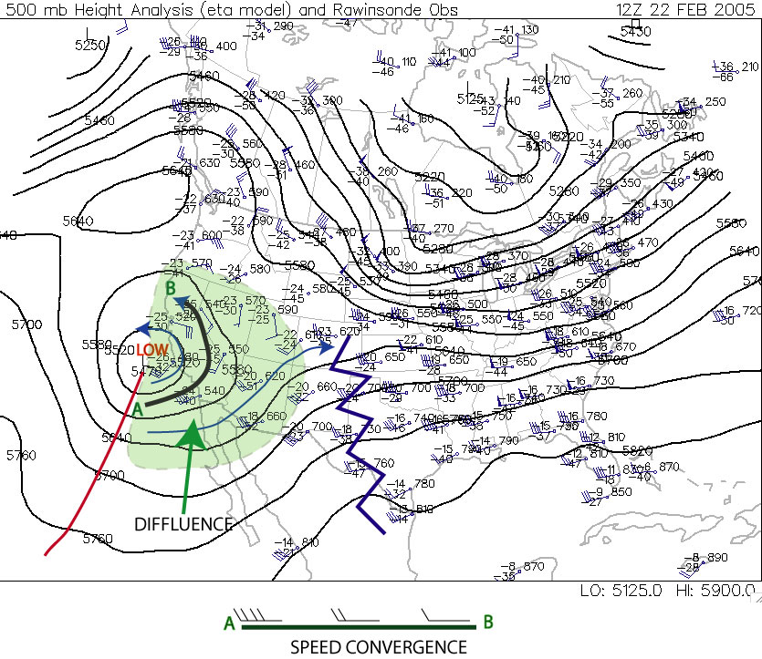 Note that in the green shaded area the wind streamlines are generally splitting apart from trough axis to ridge axis. This is called diffluence and it is very characteristis of trough/ridge systems in the jet stream that diffluence occurs east of troughs and confluence east of ridges. That would suggest to the eye, at least, that divergence is occuring in the green region. But this is the 500 mb level, the level at which Non-divergence should be occuring. Note that along each streamline, however, the wind speeds are stronger near the trough axis and weaker near the ridge axis. The inset shows the streamline that stretches from A to B on the chart. You will note that speed convergence is occurring along the streamline (meaning, that the air parcels on the west side of the streamline are "catching up" to the air parcels on the east side. Thus in the concept equation above, diffluence would have a positive sign, but there would be a negative speed divergence. At the Level of Non-Divergence, these two terms are very nearly equal in opposite, producing non-divergence. Let's take a look at a chart in the upper troposphere. 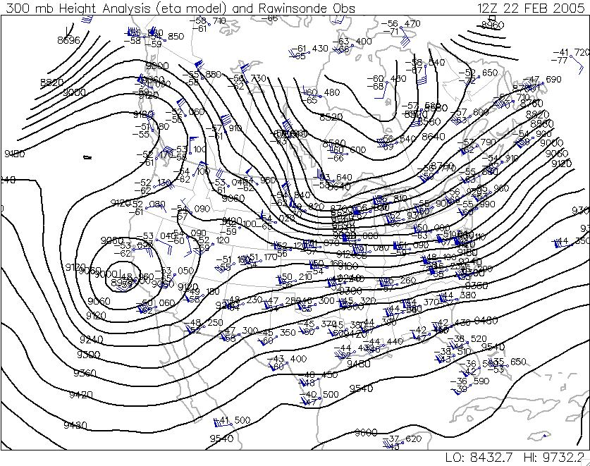 Note first that the chart has a very similar geometry, meaning the troughs and ridges are in basically the same location as they are on the 500 mb chart, as is the jet stream (this occurs in all cases, allowing you to infer positions of jet streams and troughs and ridges in the upper troposphere simply by looking at a 500 mb chart). Note also that diffluence is occurring in the same region as it is on the 500 mb chart. But, to some extent, so is speed convergence. At this point, we must leave the quasi-quantative discussion aside, because it turns out that in the upper troposphere the two terms generally are not balanced...so that diffluence "wins" out, producing net divergence east of trough axes. Below is excerpt from following web page: http://www.propilotmag.com/archives/2013/April%2013/A4_Wx%20Brief_p1.html Although air is in constant movement through all parts of the troposphere, the layer itself can be divided, meteorologically, in half. The lower half is the layer that provides the heat and moisture needed to support convection, while the upper half is the layer that promotes or suppresses the vertical motion of the air from below. The halfway point—around 500 mb or roughly FL180—is known by meteorologists as the level of nondivergence. The level of nondivergence (LND) is so called because it rests beneath the upper levels of the troposphere, where a great deal of convergence or divergence of air flow takes place. This convergence and divergence is what helps to enhance or suppress the pressure systems moving along the surface. For example, an area of diverging air in the upper troposphere will lower the air density aloft, encouraging the uplift of lower-level air and enhancing a surface low beneath it. Conversely, upper troposphere convergence will increase density there, resulting in increased surface pressure. The strength of convergence or divergence aloft can best be captured by evaluating conditions at the LND.
One of the most important measures of the potential of the upper levels to support convergence or divergence is vorticity. |
Imagine for a second that air converges into a column over a surface low all the way from the ground up to the tropopause. Using typically observed values for convergence, such a concentration of mass in this column from convergence would result in an increase in sea-level pressure on the order of 500 millibars over the course of 24 hours (I'm skipping the details of the calculations). Given what you know of the typical range for sea-level pressures, you should realize that such a huge pressure change is completely unrealistic. Indeed, typical sea-level pressure changes amount to only a few to several millibars in one day. Meteorologists have coined a term for cases with "extreme" sea-level pressure changes with rapidly-developing low-pressure systems (such as occasionally happens along the Atlantic Coast during winter). When sea-level pressure in a rapidly-developing low-pressure system decreases by at least 24 millibars in 24 hours, meteorologists call it "bombogenesis" (pronounced "bomb-o-genesis") because of the "explosive" nature of the weather that occurs with such storms (typically very strong winds and heavy precipitation). Such meteorological "bombs," are extreme cases, however, and may only happen a few times a year, even in parts of the globe prone to such rapid development. Ultimately, however, such huge sea-level pressure tendencies are so rare because low- and high-pressure systems have "checks and balances" that limit their ability to strengthen. For example, recall that divergence aloft removes weight from local air columns and reduces sea-level pressure (acting alone, creating a weak low at the surface). But, in order to avoid a significant depletion of air from local air columns, air spirals in toward low pressure at the surface. This convergence of air in the lower part of the air column works against the divergence aloft and limits its ability to reduce sea-level pressure. Thus, a much more realistic profile of convergence and divergence in the column of air over the center of a developing low-pressure system has a more balanced look to it. In the figure below, examine the left panel which shows the pattern of convergence and divergence characteristic of a "steady-state" low-pressure system (neither strengthening or weakening). Surface low-pressure systems which are neither strengthening or weakening have convergence near the surface with an equal magnitude of divergence aloft. On the other hand, check out the right panel below which illustrates a realistic profile of the air column at the center of a steady-state high-pressure system. Surface highs have divergence in the lower half of the troposphere and convergence in the upper half of the troposphere. 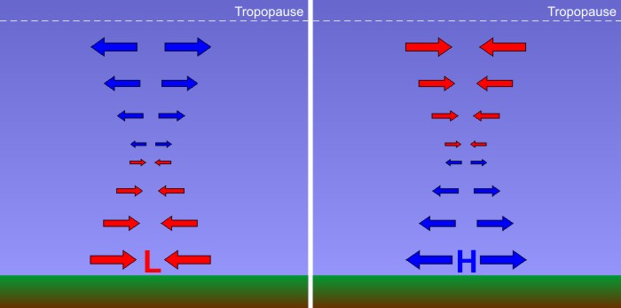 The atmosphere is always trying to correct imbalances. As a result, convergence of air around a surface low is approximately offset by divergence aloft (left), and divergence of air around a surface high is approximately offset by convergence aloft (right). The length of the arrows indicates how much air converges (diverges) into (out of) the column at any level.
Credit: David Babb
For sea-level pressure to change, either convergence or divergence must get the upper hand within an air column. For a modestly developing low-pressure system (sea-level pressure decreases in time), the total amount of air diverging from the low's central air column at high levels (a weight loss) must exceed the total amount of air converging into the low's central air column at low levels (a weight gain). Thus, there must be a net divergence and a net loss of weight, allowing the sea-level pressure to decrease and the low to "deepen" (intensify). On the other hand, for a developing high-pressure system (sea-level pressure increases in time), the total amount of air converging into the high's central air column at high levels (causing weight gain) must exceed the total amount of air diverging from the column at low levels (a weight loss). There must be a net convergence into the column and a resulting weight gain. Consider the following two graphs below. These graphs show a plot of convergence and divergence with height. Convergence is shaded in red while divergence is shaded in blue. To figure out the net convergence or divergence, compare the sizes of the shaded areas. If the blue area is greater than the red area, then there is more mass divergence out of the column than mass convergence into the column. If the red area is greater than the blue area, then there is more mass convergence into the column than divergence out of the column. 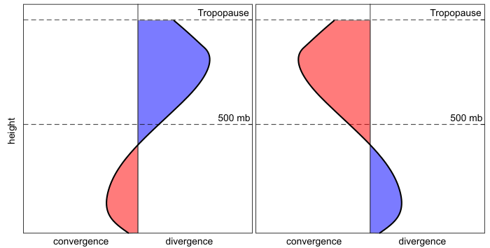 These profile plots of convergence and divergence can tell you a great deal about the sea-level pressure at the bottom of a column. If you compare the total convergence to the total divergence you can determine if the sea-level pressure is rising or falling.
Credit: David Babb
In the plot (above) on the left, notice first that the divergence and convergence profile is associated with a surface low pressure system. How do we know? We know that air swirls in and converges toward the center of low pressure in the lower atmosphere, and this profile shows low-level convergence. But, also notice that the total divergence aloft is much larger than the total convergence, so the column will lose weight over time. That weight loss means that sea-level pressure will decrease and the low-pressure system is deepening (becoming stronger). We know that the graph on the right above is associated with a surface high-pressure system because there's divergence in the lower part of the atmosphere. But, also notice that the region of convergence aloft is larger than the region of divergence, so the column will gain weight over time. This means that the sea-level pressure will rise in time, further strengthening the high-pressure system. On the other hand, what if there was a low-pressure system in which the convergence in the lower half of the troposphere was exceeding the divergence aloft? The low would weaken in time because the central air column would be gaining more weight from convergence than it was shedding via divergence aloft. A similar argument holds true for a high that is shedding more weight through divergence in the lower half of the troposphere than it is gaining from convergence aloft. Such a high would weaken in time because sea-level pressure would decrease. The bottom line is that whenever you're thinking about changes in sea-level pressure, you need to think about weight management. Obviously, divergence and convergence in the upper-half of the troposphere play a pivotal role in the fate of surface low- and high-pressure systems, so weather forecasters are always looking at upper-air patterns to spot regions of convergence and divergence. To give you more of a three-dimensional view of how the vertical patterns of convergence and divergence with low- and high-pressure systems fit together, check out the schematic below. 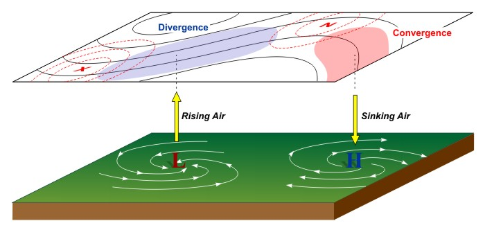 While air swirls inward and converges into the center of surface low pressure, an "upper-level disturbance" causes divergence aloft that allows air columns to shed weight. The end result is rising air, and usually clouds and precipitation associated with a low. Meanwhile, air swirls outward away from the center of surface high pressure, while upper-level convergence allows air columns to gain weight. The end result is sinking air, which typically leads to calm and mostly clear conditions.
Credit: David Babb
In particular, forecasters are always on the lookout for waves and accelerations or decelerations in the winds aloft, often referred to as "upper-level disturbances" which cause divergence aloft (marked by the blue shaded area in the image above), which cause air columns to shed weight and sea-level pressures to decrease. The resulting low-level convergence and rising air frequently causes the clouds and precipitation typically associated with low-pressure systems. On the other hand, regions of convergence aloft cause sea-level pressures to increase. The resulting low-level divergence and sinking air typically leads to the calm and mostly clear conditions associated with surface high-pressure systems. Key Concepts to Remember
So, it's all about weight management, and ultimately low-pressure systems need a source of upper-level divergence to form and thrive, while high-pressure systems need a source of upper-level convergence to form and thrive. |
The 500 mb pattern can also be used to locate where surface storms and precipitation are most likely to be occurring. Surface storms and precipitation are most often found over areas downstream of 500 mb troughs (following the horizontal wind direction from a trough to a ridge). The reason for this is that rising air motion is forced in this part of the flow pattern. Rising motion means that surface air is forced to move upward into the atmosphere. Clouds and precipitation develop where air rises. Thus, we try to use weather maps to pick out areas where air is forced to rise upward, as these are places where precipitation may be occurring. Conversely, sinking air motion is forced over areas downstream of ridges. Clouds do not develop where air is sinking. Underneath these areas fair weather is most likely. By looking at a 500 mb map, you should be able to distinguish where precipitation is most likely and where fair weather is most likely. The reason that rising motion occurs just downstream of 500 mb troughs is that in this region divergence of air occurs above the 500 mb height level in the upper troposphere, while just downstream of ridges, sinking motion occurs as a result of convergence of air above the 500 mb height level in the upper troposphere. Divergence occurs when horizontal winds cause a net outflow of air from a region (more air leaving a vertical column of air than entering), while convergence occurs when horizontal winds cause a net inflow of air into a region (more air entering a vertical column than leaving it). Take a look at these Notes on dynamical lifting of air to help you to understand what is meant by divergence and convergence, and why divergence above the 500 mb level in the upper troposphere forces air in a vertical column to rise, while convergence above the 500 mb height level in the upper troposphere forces air in a vertical column to sink. You are not expected to understand why upper level divergence and convergence occur downstream of upper level troughs and ridges respectively, just that it does. You should associate upper level divergence, which occurs downstream of 500 mb troughs, with rising air, clouds, and precipitation. Conversely, you should assoicated upper level convergence, which occurs downstream of 500 mb ridges, with sinking air and fair weather (lack of clouds and precipitation). As shown in the Notes on dynamical lifting of air, the relationship between horizontal divergence/convergence of winds just above the ground surface (at low height levels in the lower troposphere) and rising motion is reversed. This will be discussed further in later lectures along with a review of horizontal convergence and divergence. Typically, where air is rising upward, there will be convergence at low altitudes (below the 500 mb height) and divergence at high altitudes (above the 500 mb height). Conversely, where air is sinking downward, there will be divergence at low altitudes (below the 500 mb height) and convergence at high altitudes (above the 500 mb height). These concepts are also shown in the figure below. This is important since clouds and precipitation happen where air is moving upward with generally cloud-free conditions expected where air is moving downward.
The amount of precipitation that occurs with a winter-type storm depends on two main factors: atmospheric dynamics (how strongly air is forced to rise) and the availability of water vapor. Keep in mind that if the air does not contain sufficient water vapor, then no matter how forcefully it rises, clouds and precipitation will not form. On the other hand, if the air contains a lot of water vapor, then it does not take much lifting before clouds and precipitation will form. The stronger the divergence of air in the upper troposphere, the stronger air is forced to rise. The shape of a 500 mb trough often indicates something about its dynamical strength, i.e., its potential to force strong rising motion in the atmosphere and hence strong areas of precipitation. Below is a list of several things to look for in 500 mb pattern that act to increase divergence and hence rising motion. Link to Hand-drawn pictures for the items in the list.
| |||
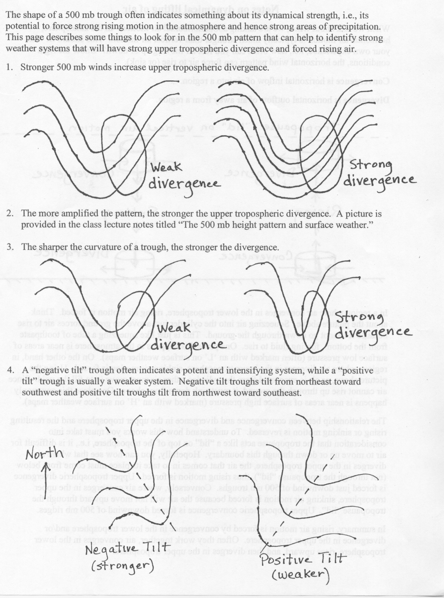 |
Divergence occurs when a stronger wind moves away from a weaker wind or when air streams move in opposite directions. When divergence occurs in the upper levels of the atmosphere it leads to rising air. The rate the air rises depends on the magnitude of the divergence and other lifting or sinking mechanisms in the atmosphere. The 1st diagram below shows two examples of divergence. Diffluence is the spreading of wind vectors. In a diffluent pattern the height contours become further spaced from each other over distance. Does this spreading out of the wind vectors and height contours cause the air to rise? The 2nd diagram below is an example of 300-mb diffluence. In a diffluent pattern, two distinct phenomena occur at the same time. First, strong wind is moving into weaker wind. Where the height contours are closer spaced, the wind velocity is higher. As you know, a strong wind moving into a weak wind is convergence. Second, as height contours spread apart, a divergence of air occurs. The convergence due to stronger wind moving into weaker wind replenishes the mass lost due to the divergence in the diffluent flow. In the bottom diagram below, notice in the diffluent pattern that strong wind is moving into weaker wind and the air streams are diverging over distance also. The effect of convergence and divergence occurring at the same time is no vertical motion. The air is merely being deformed into a new shape. The air is spreading out, but it is not rising or sinking. It is upper level divergence that causes rising air. The two best examples of upper level divergence are PVA and divergence associated with the right rear and left front quadrants of a jet streak. Upper level diffluence by itself does not cause rising air. An upper level diffluence pattern by itself does not cause rising air. It is upper level divergence that causes rising air. 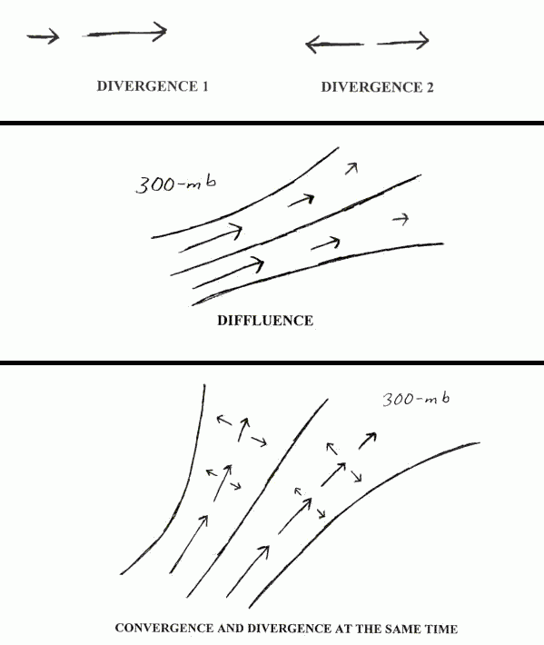 |